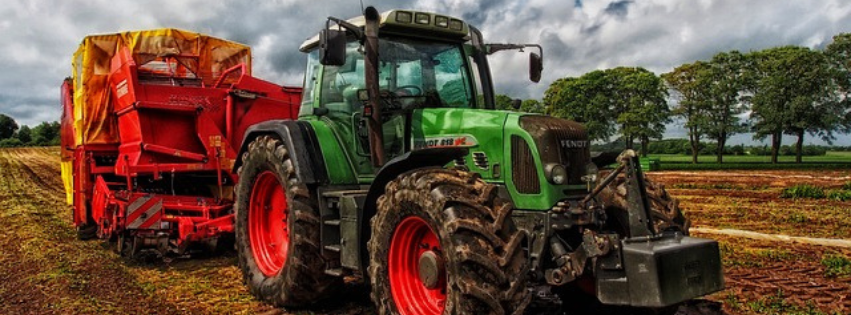

O campo e a cidade são os dois espaços físicos principais em que se baseia a população e que apresentam entre si grandes diferenças naturais, sociais e econômicas que influenciam no estilo de vida dos indivíduos que habitam em cada um destes ambientes.
Por um lado, o campo ou o meio rural são constituídos por grandes extensões de terra que abrigam um pequeno número de habitantes que vivem de forma dispersa num ambiente natural. Ao contrário, as cidades são povoações formadas por um grande número de pessoas que vivem em casas ou edifícios que se constroem muito próximos uns dos outros (já que a terra é o bem mais escasso e, portanto, mais caro). As cidades variam de acordo com o seu número de habitantes, que podem ser centenas ou milhões.
Algumas das principais características das zonas rurais são:
Têm uma baixa densidade populacional, que é geralmente estável e pode ser: zonas rurais dispersas ou zonas rurais nucleadas.
Podem estar divididas em fazendas, chácaras, sítios, outros.
São zonas em que se exercem atividades econômicas primárias, como a agricultura, a pecuária, a silvicultura, a pesca, a apicultura e a criação de animais como galinhas. Esta produção pode servir para o autoconsumo ou para abastecer uma grande quantidade da população.
Têm parte do seu território cultivado ou zonas de pastoreio.
Algumas das principais características da cidade são:
Têm um alto nível de densidade populacional que cresce de forma acelerada. A sua população vive em edifícios ou casas que são construídos num espaço físico restrito.
Têm altos índices de poluição ambiental, visual e sonora. Oferecem um estilo de vida que é reconhecido como não saudável, devido a fatores como estresse e exposição permanente a poluentes ambientais. São uma grande atração turística. Oferecem um estilo de vida que é reconhecido como não saudável, devido a fatores como estresse e exposição permanente a poluentes ambientais.
São uma grande atração turística.
São centros de desenvolvimento artístico e cultural com ofertas de cinema, música e teatro.
As diferenças entre o campo e a cidade:
População: A cidade tem uma média de habitantes por quilômetro quadrado muito alto, enquanto no campo há pequenos povoados ou casas dispersas ao longo de uma ampla extensão de território.
Paisagem a cidade tecidadem uma paisagem artificial gerada pelo ser humano em que priorizam as construções de cimento e as ruas asfaltadas. No campo a paisagem não sofreu muitas modificações e se caracteriza por ser um ambiente natural.
Infraestrutura. A conta com um grande desenvolvimento edilício e de infraestrutura que permite a coexistência de diversos tipos de atividades e indústrias. O campo, por sua vez, conta com a infraestrutura necessária para o desenvolvimento das atividades próprias dessa zona e com casas nas quais vivem os moradores da comunidade rural.
Atividade econômica. A cidade funciona como um centro para realizar várias atividades econômicas relacionadas com serviços e produção de bens a partir de matérias-primas. No campo são realizadas atividades primárias relacionadas com a obtenção de matérias a partir de recursos naturais ou de animais e vegetais.
A importância do campo e da cidade:
A importância do campo reside em seu papel como produtor de muitas das matérias primas que permitem alimentar uma grande parte da população mundial. Através das atividades primárias, o campo obtém da natureza os recursos que são a base tanto da atividade alimentícia como da indústria têxtil, farmacêutica, da construção, entre muitas outras. O campo é geralmente fundamental nas economias dos países em desenvolvimento onde o crescimento econômico depende fundamentalmente da exportação de matérias-primas como os grãos. A cidade podem gerar uma grande desigualdade entre a sua população, que pode ser causada pela má gestão dos recursos que impede todos os habitantes de aceder às necessidades básicas. Oferecem um custo de vida superior ao das zonas rurais entre outros